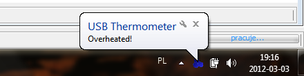

System notification trigger displays notification in system tray. An example notification has been presented below:

Alternatively a sound may be played when the system notification trigger executes.
To set up the trigger settings, aside from setting up the basic configuration
(common for all types of the triggers,
it is necessary to configure additional settings:
- Display System Tray Notification Turns on the system tray notification.
- Caption Caption of the notification.
- Text Displayed message.
- Play sound Turns on the sound notification.
- Sound file Path to a WAV file which will be played.
|